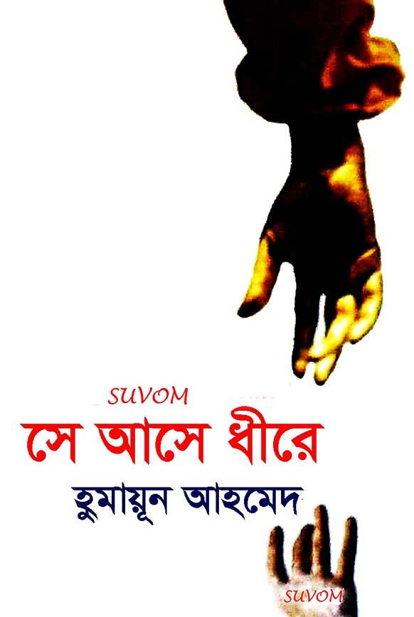

জীবনে আমি বক্তৃতা দেই নি।
বক্তৃতা না দিতে পারলে নাই। ফুলের তোড়াটা দিতে পারবে। না কি সেটাও পারবে না ?
আসুক শুক্রবার। তারপর দেখা যাবে।
খালা খট করে টেলিফোন নামিয়ে রাখলেন । আমি টেলিফোনওয়ালার দিকে তাকিয়ে বললাম, ভাই কত হয়েছে ?
টেলিফোনওয়ালা ঐ দিনের মতো বলল, স্যার আপনার কাছ থেকে পয়সা নেব না।
আমি বললাম, কেন ?
আপনি একবার আমাকে খুব বড় একটা উপকার করেছিলেন। মানুষ উপকারের কথা মনে রাখে না। আমি দরিদ্র মানুষ কিন্তু আমি উপকারের কথা মনে রাখি।
কী উপকার করেছিলাম ?
সেটা আপনাকে বলব না। আপনার যেহেতু মনে নাই আমি মনে করায়ে দিব না।
শুক্রবার কি আপনার কাজকর্ম আছে ?
দোকানে বসে থাকা— এছাড়া আর কাজকর্ম কী !
শুক্রবারে আপনার দাওয়াত। বাজনা শোনার দাওয়াত। ব্যাঞ্জো বাজনা !
গান বাজনা আমার ভালো লাগে না। কিন্তু আপনি দাওয়াত দিয়েছেন আমি অবশ্যই যাব। শুক্রবার আমার দোকান থাকবে বন্ধ।
গ. রাধাচুড়া গাছের সঙ্গে শেষ দেখা।
যা মনে মনে ভেবেছিলাম। তাই। রাধাচুড়া গাছের নিচে গভীর মুখে খাঁ সাহেব বসে আছেন। তিনি আমাকে দেখে সামান্য লজ্জা পেলেন বলে মনে হলো। খুকধুক করে শুকনা কাশি কাশতে লাগলেন। আমি বললাম, কখন এসেছেন ?
খাঁ সাহেব অস্বস্তির সঙ্গে বললেন, এই তো কিছুক্ষণ আগে। পাশ দিয়ে যাচ্ছিলাম, ভাবলাম গাছটা দেখে যাই।
কী দেখলেন ?
অবস্থা আরো খারাপ হয়েছে। আগে তিনটা ডালে পাতা ছিল। এখন মাত্র দুটা ডালে আছে। তার মধ্যে একটার পাতা হলুদ হওয়া ধরেছে। আমি কোনো আশা দেখছি না।
আপনার মনে হয় মন খারাপ ।
মন খারাপ টারাপ না, এতগুলা মানুষ গাছটাকে বাঁচাবার চেষ্টা করছে। চেষ্টা কাজে লাগছে না। এইটা দেখে খারাপ লাগছে। রুগ্ন গাছের গোড়ায় তুতে দিলে উপকার হয় শুনেছি। আজ কিছু তুতে দিয়েছি। আর কী করা যায় মাথায় আসছে না।
আপনি কি রোজই এখানে আসেন ?
রোজ না হলেও প্রায়ই আসি ।... কথাটা ঠিক বললাম না, রোজই আসি। কী জন্যে জানি গাছটার উপর মায়া পড়ে গেছে।
আপনাকে দেখে মনে হচ্ছে গাছের উপর মায়া পড়ে যাওয়াতে আপনি লজ্জা পাচ্ছেন। লজ্জা পাচ্ছেন কেন ?
মানুষের উপর কোনোদিন মায়া পড়ল না। গাছের উপর মায়া। এই জন্যেই লজ্জা লাগে। আচ্ছা হিমু, কয়েকদিন থেকে একটা ব্যাপার আমার মাথার মধ্যে ঘুরছে। ঐটা করলে কেমন হয় ?
ঐটা মানে কী ?
মোঘল সম্রাট বাবরের ব্যাপারটা ।
খুলে না বললে বুঝতে পারছি না।
ঐ যে সম্রাট বাবরের পুত্র হুমায়ুন অসুস্থ হয়ে পড়লেন। জীবন সংশয়। চিকিৎসকরা জবাব দিয়ে দিয়েছেন। তখন এক গভীর রাতে সমাট বাবর তার ছেলের বিছানার চারদিকে ঘুরতে লাগলেন আর বলতে লাগলেন, “হে আল্লাহপাক, আমার জীবনের বিনিময়ে আমার পুত্রের জীবন রক্ষা কর”। সকালেই ছেলে সুস্থ হতে শুরু করল আর সম্রাট বাবর অসুস্থ হয়ে পড়লেন। কয়েকদিনের মধ্যেই হুমায়ূন সুস্থ হয়ে উঠলেন, সম্রাট বাবর মারা গেলেন।
আপনার মাথায় কি এরকম কিছু আছে নাকি ? নিজের জীবন দিয়ে গাছের জীবন রক্ষা করা।
আরে না। কথার কথা বলেছি। আমার তো মাথা খারাপ হয় নি।
চলুন বাসায় যাই।
তুমি যাও। মওলানা সাহেব আছর ওয়াক্ত আসবেন। দরুদে শেফার খতম তিনি শেষ করেছেন। আজ দোয়া হবে। দোয়ায় সামিল হব।
ঠিক আছে আপনি থাকুন। আমি রাধাচুড়া গাছের দিকে তাকিয়ে বললাম, হে বৃক্ষ বিদায়।
ঘ. জহিরের সঙ্গে কথা বলা ।
কথা বলা সম্ভব হলো না । সে কোথায় আছে কে জানে। হাঁটো পথিক হাঁটো।
হন্টন শুধু হন্টন
নিজ দুঃখ
পথ মাঝে
করিও বণ্টন ।
ঙ. ফুলফুলিয়া ।
মেয়েটার কোনো একটা সমস্যা হয়েছে। সমস্যা ধরতে পারছি না। সে যে মাঝে মাঝে লুকিয়ে কাঁদে তা তার চোখ দেখে বোঝা যায়। আমার প্রতি তার ব্যবহার খুব আন্তরিক ছিল, সেই আন্তরিকতায় ভাটা পড়েছে। এখন মনে হয় সে বিরক্তও হয়। ঐ দিন জিজ্ঞেস করলাম, জহিরের চিঠিটা কি এসেছে ? সে তার জবাবে কঠিন গলায় বলেছে, আপনার কথা আমার মনে আছে। চিঠি তুলে রেখেছি। যেদিন পড়তে বলবেন— পড়ব ।
মেয়েটার কি তার স্বামীর সঙ্গে বনিবনা হচ্ছে না ? স্বামীর প্রসঙ্গে ফুলফুলিয়া কখনো কিছু বলে না। প্রবাসী স্বামীর প্রসঙ্গ একবারও আসবে না— সেটা কেমন কথা ? একবার আমি জিজ্ঞেস করলাম, ফুলফুলিয়া স্বামীর কাছে কবে যাবে ?
ফুলফুলিয়া বলল, কেন জানতে চাচ্ছেন ?
আমি বললাম, পাহাড় জঙ্গলের দেশ আমার কখনো দেখা হয় নি। ঠিক করেছি আমিও তোমার সঙ্গে যাব। পাহাড় জঙ্গলে ঘুরব।
ফুলফুলিয়া বলল, ঠিক আছে।
সে মুখে বলল, ঠিক আছে, কিন্তু আমার মনে হলো ঠিক নেই। সব কিছুই এলোমেলো। ফুলফুলিয়ার বাবার গানের সিডি বের হচ্ছে। এ বিষয়েও তার কোনো উৎসাহ নেই, অথচ মেয়েটা এমন ছিল না। ফুলফুলিয়ার সঙ্গে একদিন বসতে হবে। প্রাইভেট সিটিং। অনেক উল্টাপাল্টা কথা বলে ফুলফুলিয়ার মনের চারদিকে যে শক্ত আবরণটি তৈরি হয়েছে সেটা ভেঙে দিতে হবে। পাঁচ প্রশ্নের খেলা, খেলা যেতে পারে। পাঁচটি প্রশ্ন করে উত্তর বের করতে হবে। উত্তর বের করতে না পারলে আমার যে-কোনো পাঁচটি প্রশ্নের উত্তর দিতে হবে। ভালো না লাগলেও উত্তর দিতে হবে।
বলো তো ফুলি জিনিসটা কী ? সে ঝিকমিক করে। তাকে দেখা যায় প্রবল শোকে ও প্ৰবল আনন্দে।
সে দেখতে কেমন ?
তার কোনো আকৃতি নেই, কিন্তু সে ঝিকমিক করে।
তার বর্ণ কি ?
তার কোনো বর্ণ নেই, কিন্তু সে ঝিকমিক করে।
সে কোথায় থাকে ?
সে সব জায়গায় নানান ভঙ্গিমায় আছে। আকাশে আছে বাতাসে আছে, সমুদ্রে আছে, মরুভূমিতে আছে। আর মাত্র দু'টি প্রশ্নের সুযোগ আছে। দু'টি প্রশ্ন করে জেনে নাও জিনিসটা কী ।
পারছি না।
জিনিসটা— চোখের জল। এখন আমার পাঁচটি প্রশ্নের উত্তর দাও। পাঁচটা প্রশ্নের একই উত্তর হলে চলবে না। পাচ ধরনের উত্তর হতে হবে।
প্রথম প্রশ্ন— মন বিষণ্ন কেন ?
দ্বিতীয় প্রশ্ন— মন বিষণ্ন কেন ?
তৃতীয় প্রশ্ন—মন বিষণ্ন কেন ?
চতুর্থ প্রশ্ন— মন বিষণ্ণ কেন ?
পঞ্চম প্রশ্ন— মন বিষণ্ন কেন ?
৬
মাজেদা খালা বলল, ঐ বুড়োই কি তোর বিখ্যাত ওস্তাদ ?
আমি বললাম, হু। ব্যাঞ্জোরাজ ওস্তাদ শমসের উদ্দিন খাঁ ।
খাঁ সাহেব রেকর্ডিংরুমে কার্পেটের উপর মাথা নিচু করে বসে আছেন। তাঁর ডানপাশে ফুলফুলিয়া। খাঁ সাহেব কিছুক্ষণ পরপর কাশছেন। জটিল ধরনের কাশি। কাশির সময় ফুলফুলিয়া বাবার পিঠে হাত রাখছে। রেকর্ডিংরুমের বিশাল জানালাটা কাচের। বাইরে থেকে দেখা যাচ্ছে। আমি বললাম, খালা ভালো করে দেখ। ইনিই তোমার বিছানায় বসে ছিলেন না ?
খালা প্রশ্নের জবাব না দিয়ে বললেন, মানুষটাকে তো দেখে মনে হচ্ছে অসুস্থ। বকর বকর করে কাশছে।
হু। কাল রাত থেকেই কাশছে। জ্বরও আছে। থার্মেমিটার ধরলে একশ দুই টুই পাওয়া যাবে বলে ধারণা। আমি বলেছিলাম আজকের রেকর্ডিং শিডিউল বাতিল করতে, বুড়ো রাজি হয় নি।
বকর বকর কাশি নিয়ে গান-বাজনা করবে। কীভাবে ?
গান তো করবে না। যন্ত্র বাজাবে।
কোন যন্ত্র— হাতে যেটা নিয়ে বসে আছে সেটা ?
হু।
খেলনা খেলনা মনে হচ্ছে।
বাজনা শুরু হলে বুঝবে খেলনা না। রবীন্দ্রনাথের কবিতা—
‘এত ক্ষুদ্র যন্ত্র হতে এত শব্দ হয়
দেখিয়া জগতের লাগে পরম বিস্ময় ।’
খালা অস্বস্তির সঙ্গে বললেন, হিমু তোর সঙ্গে একটা ব্যাপার ক্লিয়ার করে নেই-আমি কিন্তু বক্তৃতা দেব না। হাতে ফুলটুলও তুলে দিতে পারব না। আচ্ছা দিতে হবে না।
তুই আবার কায়দা করে টাকা পয়সার ব্যাপারে আমাকে ফাঁসাবি না। আমি একটা পয়সাও দেব না।
আচ্ছা দিও না। তুই তো টাকা পয়সার জোগাড় করেছিস ?
এখনো করি নি। তবে ব্যবস্থা হয়ে যাবে। এসো তোমার সঙ্গে ওস্তাদজীর পরিচয় করিয়ে দেই।
কোনো দরকার নেই। আমি কিন্তু দশ পনেরো মিনিট থেকেই চলে যাব। বাজনা ফাজনা আমার ভালো লাগে না। এখানে এসেছি জানতে পারলেও তোর খালু রাগ করবে।
ঠিক আছে। চলে যেও।
ওস্তাদজীর পাশে যে মেয়েটা বসে আছে সে কে ?
উনার মেয়ে। দেখতে সুন্দর না ?
খুবই সুন্দর। মেয়েটাকে এত চিন্তিত লাগছে কেন ?
জানি না । জিজ্ঞেস করে আসব ?
তুই কী যে কথা বলিস। কী জিজ্ঞেস করবি ?
জিজ্ঞেস করব যে, আমার খালা জানতে চাচ্ছেন- তুমি এত চিন্তিত কেন ? তুই কি মেয়েটাকে চিনিস ?
সামান্য চিনি। কোনো মেয়েকেই পুরোপুরি চেনা সম্ভব না। সেই চেষ্টাও করা উচিত না। একমাত্র রবীন্দ্রনাথই মেয়েদের পুরোপুরি চিনতেন। তাও দেশী মেয়ে না। বিদেশী মেয়ে।
তাই না-কি?
উনার গান শুন নি
“চিনি গো চিনি তোমারে ওগো বিদেশিনী।”
হিমু আমার সঙ্গে ফাজলামি করবি না। ওস্তাদজীর মেয়েটার কি বিয়ে হয়েছে ?
হু।
হাসবেন্ড কী করে ?
ডাক বিভাগে কাজ করে।
মেয়েটার চুল সুন্দর না। কোঁকড়ানো চুলে মেয়েদের ভালো লাগে না। পার্লারে গিয়ে কোঁকড়ানো চুল ঠিক করা যায়।
মেয়েটার সঙ্গে কি কথা বলতে চাও ?
কী উল্টাপাল্টা কথা বলছিস ? আমি কী কথা বলব ?
পার্লারে গিয়ে চুল ঠিক করার কথা বলবে।
হিমু তুই খুবই বিরক্ত করছিস। আমার সামনে থেকে যা। বাজনা ফাজনা কী করার শুরু কর, ঘড়ি ধরে দশ মিনিট থাকব। তারপর চলে যাব। আমাকে শিকল দিয়ে বেঁধেও রাখতে পারবে না।
আমি ওস্তাদজীর কাছে গেলাম।
ওস্তাদজীর শরীর যতটা খারাপ ভেবেছিলাম, দেখা গেল শরীর তার চেয়েও খারাপ। চোখের মণি ছোট হয়ে গেছে এবং মণি চকচক করছে। হাত কাঁপছে। তার হাতে এক লিটারের পানির বোতল। একটু পর পর গ্লাসে পানি ঢেলে পানি খাচ্ছেন। ফুলফুলিয়া চিন্তিত গলায় বলল, বাবার শরীর বেশি খারাপ। উনার বিছানায় শুয়ে থাকা দরকার। শমসের উদ্দিন খাঁ সাহেব জ্বলজ্বলে চোখে মেয়ের দিকে তাকিয়ে বললেন, যন্ত্রণা করিস না। আমার যন্ত্রণা ভালো লাগে না।
ফুলফুলিয়া বলল, যন্ত্রণা আমারও ভালো লাগে না। আমি সারাজীবন তোমার যন্ত্রণা মুখ বুজে সহ্য করেছি। এখন তুমি কিছুক্ষণ আমার যন্ত্রণা সহ্য করবে ।
তুই কী করবি ?
আমি তোমাকে বাসায় নিয়ে যাব ।
জোর করে বাসায় নিয়ে যাবি ?
হ্যাঁ জোর করে বাসায় নিয়ে যাব।
খাঁ সাহেবের দুটা চোখ ধ্বক করে জ্বলে উঠল। তিনি স্টুডিওর সবাইকে চমকে দিয়ে পাশে বসে থাকা মেয়ের গালে প্রচণ্ড চড় বসিয়ে দিলেন। ফুলফুলিয়া মাথা ঘুরে এলিয়ে পড়ে গেলেও সঙ্গে সঙ্গে উঠে বসল। নিজেকে সামলাবার জন্যে কিছুটা সময় নিল। তারপর শাড়ির আঁচল মাথায় তুলতে তুলতে সহজ গলায় বলল, বাবা রেকর্ডিং শেষ করে চলে এসো। আমি বাসায় যাচ্ছি।
খাঁ সাহেব থমথমে গলায় বললেন, রেকর্ডিং-এর সময় তুই থাকবি না ?
ফুলফুলিয়া বলল, না। আমি না থাকলে তোমার জন্যে ভালো আমার জন্যেও ভালো।
খাঁ সাহেব বললেন, যেখানে ইচ্ছা যা। আমি বাকি জীবন তোর মুখ দেখতে চাই না।
ফুলফুলিয়া কিছু না বলে উঠে দাঁড়াল।
গল্প উপন্যাসে প্রায়ই পাওয়া যায়- এমন প্রচণ্ড চড় দেয়া হয়েছে যে গালে আঙুলের দাগ বসে গেছে। এই ব্যাপার বাস্তবে ঘটে না। বাস্তবে যা হয় তা হচ্ছে লাল হয়ে গাল ফুলে যায়। সমস্ত মুখে লাল আভা ছড়িয়ে যায়। যে গালে চড় দেয়া হয়েছে সে দিকের চোখ খানিকটা ছোট দেখা যায়। চোখে পানি ছলছল করতে থাকে। ফুলফুলিয়ার ক্ষেত্রে দ্বিতীয় ব্যাপারটা ঘটছে না। তার চোখে ছলছলানি নেই। বাবার চড় খেয়ে মেয়েটা হয়তো অভ্যস্ত।
আমি ফুলফুলিয়ার দিকে তাকিয়ে বললাম, বাসায় যাবে তো? এসো রিকশা করে দিচ্ছি। ফুলফুলিয়া বিনা বাক্য ব্যয়ে উঠে এলো। তাকে নিয়ে রাস্তায় চলে এলাম। লোকজনদের কৌতুহলী চোখের আড়াল থেকে যত দ্রুত তাকে সরিয়ে দেয়া যায় ততই ভালো। রাস্তায় নেমে ফুলফুলিয়া বলল, ভাইজান আমি বাসায় যাব না। স্টুডিওর কোথাও লুকিয়ে থাকব যাতে বাবা আমাকে দেখতে না পান। বাবার বাজনা রেকর্ড হবে, আমি শুনব না— এটা কেমন কথা ?
আমি বললাম, অবশ্যই তুমি শুনবে। তোমাকে লুকিয়ে রাখার ব্যবস্থা করছি।
বাবার শরীরটা অসুস্থ। মেজাজও খারাপ। কাজেই বাবা আজ চমৎকার বাজাবে। শরীর খারাপ থাকলে এবং মেজাজ খারাপ থাকলে বাবা ভালো বাজায়।
তাই না-কি ?
জ্বি। আপনি দেখবেন— এখানে যারা আছে। বাবা তাদের সবার আক্কেল গুড়ুম করে দেবেন।
তোমার গালগুড়ুম করে শুরু, শেষ হবে আক্কেলগুডুমে। ফুলফুলিয়া শোন— চা খাবে ? আমাদের চিফ সাউন্ড রেকডিস্ট এখনো এসে পৌঁছায় নি। কাজেই হাতে সময় আছে।
ফুলফুলিয়া ছোট্ট নিঃশ্বাস ফেলে বলল, আপনি আমার মন ভালো করার চেষ্টা করছেন। তার দরকার নেই। বাবার চড় খেয়ে আমার অভ্যাস আছে।
চড়ের পর চা খেতে কিন্তু খারাপ লাগে না। রাস্তার পাশের দোকানগুলি খুব ভাল চা বানায়। খেয়ে দেখ।
চলুন যাই।
ফুলফুলিয়া শাড়ির আঁচল মাথায় তুলে দিয়েছে। আঁচল এমন সাবধানে গালের উপর টেনেছে যে ফুলে উঠা গাল দেখা যাচ্ছে না। তাকে বউ বউ লাগছে। ফুলফুলিয়া বলল, বাবার শরীর হঠাৎ কেন খারাপ করেছে জানেন ?
আমি বললাম, না।
ফুলফুলিয়া বলল, আপনার জানার কথা না। বাবা পুরো ব্যাপারটা লুকিয়ে রেখেছে। আমি খুব কায়দা করে বের করেছি।
বল শুনি।
ফুলফুলিয়া ক্লান্ত নিঃশ্বাস ফেলে বলল, বাবা ঢাকা শহরের কোথায় যেন অসুস্থ একটা গাছ দেখেছেন। বাবা ঐ গাছকে জড়িয়ে ধরে বলেছেন— গাছের অসুখটা যেন তার শরীরে চলে আসে। গাছ যেন বেঁচে যায়। এখন না-কি গাছের অসুখ তার কাছে চলে এসেছে। বাবার মাথা শুরু থেকেই খারাপ ছিল। যত দিন যাচ্ছে ততই খারাপ হচ্ছে।
সে-রকমই তো মনে হচ্ছে।
কিছু কিছু মানসিক রোগী আছে যাদের দেখে বোঝার উপায়ই নেই যে তারা মানসিক রোগী। সহজ স্বাভাবিক জীবন যাপন করছে। অসুখের খবরটা টের পাচ্ছে শুধু তাদের অতি কাছের মানুষজন।
তুমি নিশ্চিত তোমার বাবা একজন মানসিক রোগী ?
হ্যাঁ, আমি নিশ্চিত। আমি আরো একটা ব্যাপার নিশ্চিত, সেটা কি বলব ?
বলো।
অসুস্থ গাছের ব্যাপারটার সঙ্গে আপনার যোগ আছে। বাবার মাথায় জিনিসটা আপনি ঢুকিয়ে দিয়েছেন। আপনার কোনো অলৌকিক ক্ষমতা আছে কি-না আমি জানি না, তবে মানুষের মাথার ভেতর ঢুকে যাবার ক্ষমতা যে আছে সে বিষয়ে আমি নিশ্চিত। আমার কথাগুলি কি ঠিক ?
ফুলফুলিয়ার দিকে আমি হাসিমুখে তাকালাম। ফুলফুলিয়া কঠিন গলায় বলল, আপনি আমার প্রশ্নের জবাব দিন।
আমি হাই তুলতে তুলতে বললাম, সাউন্ড রেকর্ডিস্ট চলে এসেছে। এসো তাড়াতাড়ি যাই, তোমাকে লুকিয়ে রাখার ব্যবস্থা করি ।
দশ মিনিটের ভেতর খালার চলে যাবার কথা, তিনি যাচ্ছেন না। এখানকার কর্মকাণ্ডে মজা পেয়ে গেছেন। খাঁ সাহেবের মেয়ের গালে চড় মারাটা তাকে বিশেষভাবে আকর্ষণ করেছে। কী কারণে মেয়ে চড় খেয়েছে এটা না জেনে তিনি নড়বেন না। প্রয়োজনে সন্ধ্যা পর্যন্ত থাকবেন। খালা আমাকে আড়ালে ডেকে নিয়ে বললেন, মেয়েটা চলে গেছে না কি ?
আমি বললাম, না। লুকিয়ে আছে। বাবার বাজনা না শুনে সে নড়বে না।
এত লোকের সামনে এত বড় অপমান। তারপরও মেয়ে বসে আছে। তার কি আত্মসম্মান নেই ?
আত্মসম্মানের চেয়ে বেশি আছে বাবার প্রতি মমতা।
কী জন্যে মেরেছে গুছিয়ে বল তো ।
জানি না তো কী জন্যে মেরেছে।
অবশ্যই জানিস, তুই তো তখন আশেপাশেই ছিলি। কথাবার্তা শুনেছিস ।
আশপাশে থাকলেও কিছু শুনতে পাই নি। হঠাৎ চড়ের শব্দ শুনলাম। তুচ্ছ কোনো কারণ হবে ।
তুচ্ছ কারণ তো অবশ্যই না। তুচ্ছ কারণে এত লোকের সামনে এত বড় মেয়েকে বাবা মারে না। অবশ্যই জটিল কিছু আছে। আমি একটা সন্দেহ অবশ্যি করছি। শুনতে চাস ?
চাই- কিন্তু এখন না। বাজনা শুরু হবে।
মেয়েটা কোথায় লুকিয়ে আছে ?
রেকর্ডিং-এর কয়েকটা স্টুডিও আছে, ওর একটাতে লুকিয়ে রেখেছি। তুমি এক কাজ কর, তোমাকেও সেখানে লুকিয়ে রাখি। তুমি স্পাইয়িং করে ঘটনা বের করে ফেল ।
তুই আমাকে ভাবিস কী ? আমার কি স্পাইগিরি করা স্বভাব ? আমি যদি ঐ ঘরে থাকি মেয়েটাকে সান্ত্বনা দেবার জন্যে থাকব। এত মানুষের সামনে অপমানিত হয়েছে। একটা মেয়ে মানুষ।
প্রফেশন্যাল একজন সভাপতিকে আসতে বলা হয়েছিল। (অবসরপ্রাপ্ত বিশ্ববিদ্যালয়ের অধ্যাপক। অবসরপ্রাপ্ত জেনারেলরা রাজনীতিতে আসেন। বিশ্ববিদ্যালয়ের অবসরপ্রাপ্ত শিক্ষকদের দৌড় এলেবেলে অনুষ্ঠানের সভাপতি পর্যন্ত ।)
গাড়ি না পাঠানোয় তিনি আসেন নি। তবে আমার টেলিফোনওয়ালা এসেছে। নিজের লোকের মতো ছাটোছুটি করে চা খাওয়াচ্ছে। পানি খাওয়াচ্ছে।
মাইক অনা হয়েছে। সাউন্ড রেকর্ডিস্ট ওকে সিগন্যাল দিয়েছে। লালবাতি জ্বলেছে। ওস্তাদ শমসের উদ্দিন খাঁ এদিক ওদিক তাকাচ্ছেন। আমি কাছে গিয়ে বললাম, কিছু বলবেন ?
শমসের উদ্দিন বিব্রত গলায় বললেন, ফুলফুলিয়া কি সত্যি চলে গেছে ?
আমি বললাম, না। আপনার পাশের ঘরেই লুকিয়ে আছে। আপনার বাজনা না শুনে সে যাবে না ।
শমসের উদ্দিন বললেন, আপনি কি দয়া করে আমার মেয়েটাকে বলবেন, সে যেন আমাকে ক্ষমা করে দেয়। আমি অনেক অপরাধ অনেকবার করেছি, কখনো তার জন্যে ক্ষমা চাই নাই । আজ আমি আমার মেয়ের কাছে ক্ষমা প্রার্থনা করছি। এইটা তাকে জানিয়ে আসুন, তারপর বাজনা শুরু করব।
আপনার মেয়েকে কিছু বলতে হবে না। মাইক অন করা আছে। আপনার কথা সবাই শুনতে পাচ্ছে।
ও আচ্ছা, ঠিক আছে।
আপনার কি শরীর বেশি খারাপ লাগছে ?
শরীর খারাপ লাগছে। কিন্তু অসুবিধা নাই। বিসমিল্লাহ।
শমসের উদ্দিন খাঁ ব্যাঞ্জোর উপর ঝুঁকে পড়লেন। প্রথমে টুং করে একটা শব্দ হলো। তারপরে দু’বার টুং-টাং ! তারপরই মনে হলো টিনের চালে বৃষ্টির ফোঁটা পড়তে শুরু করেছে। একেকবার দমকা হাওয়া আসছে বৃষ্টি উড়িয়ে নিয়ে যাচ্ছে— আবার ফিরে আসছে, আবার চলে যাচ্ছে। না, এখন আর বৃষ্টির শব্দ বলে মনে হচ্ছে না, মনে হচ্ছে শিকলপরা বন্দিনী রাজকন্যা কাঁদছে। তার কান্নার শব্দ আসছে একই সঙ্গে তার পায়ের শিকলের শব্দও আসছে। মায়া ধৰ্ম গ্রন্থে ঈশ্বর বলেছেন--
হে পতিত মানবসন্তান। তোমরা ভুল জায়গায় আমাকে অনুসন্ধান করো না। আমাকে অনুসন্ধান করা সঙ্গীতে। আমি ছন্দময় সঙ্গীত। আমার সৃষ্টি ছন্দময় সঙ্গীত। আমার ধ্বংস ছন্দময় সঙ্গীত ।
বাজনা শেষ হলো। ফুলফুলিয়ার ঘরে ঢুকে দেখি সে ব্যাকুল হয়ে কাঁদছে। খালা তাকে শান্ত করার চেষ্টা করছেন। আমাকে দেখেই খালা বললেন, ওস্তাদজীকে এ রকম মন খারাপ করা বাজনা বাজাতে নিষেধ কর। মেয়েটা কেঁদে অস্থির হচ্ছে। গান বাজনা মানুষকে আনন্দ দেবার জন্যে। কাদাবার জন্যে তো না। তুই এক্ষুণি গিয়ে উনাকে আমার কথা বলে নিষেধ করবি। আমার কথা উনাকে শুনতে হবে। আমি প্রডিউসার । টাকা আমি দিচ্ছি।
টাকা তুমি দিচ্ছ ?
অবশ্যই। কত টাকা দিতে হবে বল। চেক বই সঙ্গে আছে। চেক লিখে দিচ্ছি।
বাজনার দ্বিতীয় অংশ শুরু হয়েছে। ফুলফুলিয়ার কান্না থেমেছে। সে মন্ত্রমুগ্ধের মতো তাকিয়ে আছে। যেন সে এই ভুবনে নেই। তার যাত্রা শুরু হয়েছে অন্য কোনো ভুবনের দিকে। খালার চোখে পানি টলমল করছে। আমার সামনে তিনি যদি চোখের পানি ফেলেন তাহলে খুব লজ্জায় পড়বেন। আমি ঘরের বাইরে চলে এলাম ।
হে মানবসন্তান আমি নানান রূপে তোমাদের সামনে নিজেকে উপস্থিত করেছি। চোখ মেললেই আমাকে দেখবে। কান পাতলেই আমাকে শুনবে। কেন তোমরা চোখ ও কান দুই-ই বন্ধ করে রেখেছ ?
৭
হিমু ভাইজান,
এই চিঠি তোমার হাতে পৌঁছবে কি-না আমি বুঝতে পারছি না। আমার হাতে এখন কোনো টাকা-পয়সা নেই। চিঠিটা লিখে খামে ভরে, খামের উপর তোমার মেসের ঠিকানা লিখে এক মুদির দোকানির হাতে দিয়েছি। সে যদি পাঠায় তাহলে হয়তো পাবে। মুদি দোকানির চেহারাটা সরল টাইপ। সে বিনে পয়সায় আমাকে একটা গায়ে মাখা সাবান দিয়েছে। তার দেয়া সাবান দিয়ে অনেক দিন পর সাবান মেখে গোসল করেছি। দোকানির নাম কুদ্দুস মিয়া। বাড়ি রংপুর। বিয়ে করেছে খুলনায়। এই চিঠি তোমার হাতে পৌছবে এটা ভেবেই লিখছি। শুরুতে আমার খবর সব দিয়ে নেই।
প্রথম খবর আমি নর্থ বেঙ্গল হাঁটা শেষ করেছি। এখন আছি যমুনা নদীর পাড়ে। পা ফুলে গেছে বলে হাঁটতে পারছি না। এক দু'দিন বিশ্রাম নিয়ে আবার শুরু করব। ঠিক করেছি ঢাকা হয়ে যাব। আমাকে দেখলে এখন তুমি চিনতে পারবে না। দাড়ি গোঁফ গজিয়ে বিন লাদেনের মতো চেহারা হয়ে গেছে। শরীরের রঙও জ্বলে গেছে। আয়নায় নিজেকে দেখে খুবই মজা লাগে। সমুদ্রে ডুব দিয়ে দাড়ি গোঁফ কামিয়ে ফেলব বলেছিলাম— এখন আর কামাতে ইচ্ছা করছে না। মায়া পড়ে গেছে। দাড়ির জন্যে একটা অসুবিধা শুধু হচ্ছে। উকুন। চিরুনি দিয়ে আঁচড়ালেই পুট পুট করে উকুন পড়ে। মাথার চুলের উকুন এবং দাড়ির উকুন কিন্তু আলাদা। দাড়ির উকুন সাইজে ছোট, একটু সাদাটে রঙ আছে। এই বিষয়ে বিস্তারিত কোনো গবেষণা হয়েছে কি-না কে জানে। গবেষণা হওয়া প্রয়োজন। দাড়ির উকুন মাথায় যায় না। মাথার উকুন দাড়িতে আসে না। তাদের সীমানা নির্দিষ্ট। যেন উকুনরা দুটা আলাদা দেশের অধিবাসী। কেউ বর্ডার ক্রস করে না।
দ্বিতীয় খবর, এই খবরটা মজার। চুল দাড়ির কারণে অনেকেই আমাকে পীর ফকির ভাবতে শুরু করেছে। কোনো বাড়িতে খেতে চাইলে আগ্রহ করে খাওয়াচ্ছে। গত বুধবার রাতে কী হয়েছে শুনলে তুমি খুবই মজা পাবে। আমি এক বাড়িতে রাতে থাকার জন্যে জায়গা চেয়েছি, তারা সঙ্গে সঙ্গেই বাংলাঘরে আমার থাকার জায়গা দিয়েছে। গোসল করার জন্যে গরম পানি। যেন অনেক দিন পরে বাড়িতে মেহমান এসেছে। গোসল শেষ করে খাওয়া-দাওয়া করে ঘুমুতে যাব এমন সময় চার-পাঁচ বছরের একটা বাচ্চা মেয়ে কোলে নিয়ে তার বাবা-মা উপস্থিত। বাচ্চাটা পেটের ব্যথায় চিৎকার করে কাঁদছে। বাবা মা চাচ্ছে আমি যেন মেয়েটার পেটে একটা ফুঁ দিয়ে দেই। চিন্তা কর কী অবস্থা। আমাকে কে ফুঁ দেয় তার নাই ঠিক। শেষে দাঁত মুখ খিঁচিয়ে দিলাম একটা ফুঁ। আমার দাঁত মুখ খিঁচানো দেখে মেয়েটা হয়তো ভয় পেয়েছে। ভয়েই তার ব্যথা কমে গেল । মেয়ের বাবা-মা যত না অবাক আমি তার চেয়েও অবাক । মেয়ের বাবা একটা বিশ টাকার নোট আমাকে দিতে গেল । আমি গম্ভীর গলায় বললাম- “টাকা দিয়ে কী হয় ? টাকা দিয়ে তুমি কি চাঁদের আলো কিনতে পারবে ?” খুবই ফিলসফি মার্ক কথা। নিজের কথা শুনে আমি নিজেই মুগ্ধ! ঐ বাড়ি থেকে মোটামুটি আমি একজন পীর সাহেব হিসেবে বের হলাম। বাড়ির মানুষ খুবই অবাক, যখন আমি সকালের নাশতা খেলাম না। আমি বললাম, দিনে আমি কিছু খাই না। সূর্য ডোবার পর একবেলা খাই। ঘটনা অবশ্যি এ রকমই। ভরপেটে হাঁটতে কষ্ট হয়। তবে ঐ বাড়ির লোকজন ভেবেছে আমি সারাদিন রোজা রাখি। আমি কারো ভুল ভাঙ্গাচ্ছি না। নিজেকে অলৌকিক ক্ষমতাসম্পন্ন পীর ভাবতে ভালো লাগছে। কেউ যখন আমার পরিচয় জিজ্ঞেস করে তখন বলি- পরিচয় তো ভাই জানি না। পরিচয়ের খোঁজেই পথে পথে হাঁটছি। খুবই উচ্চমার্গের কথা ।
এখন তোমাকে জরুরি একটা কথা বলি। ফুলফুলিয়ার সঙ্গে তোমার কি কোনো যোগাযোগ আছে ? এক রাতে আমি স্বপ্নে দেখলাম ফুলফুলিয়ার বাবা খুবই অসুস্থ। তাকে খোলা মাঠে শুইয়ে রাখা হয়েছে। গাছের পাতা দিয়ে তার সারা শরীর ঢাকা । ফুলফুলিয়া পা থেকে মাথা পর্যন্ত নিজেকে বোরকায় ঢেকে বাবার চারদিকে ঘুরছে। স্বপ্নটা দেখে আমার খুব মন খারাপ হয়েছে। যদিও জানি স্বপ্ন কোনো ব্যাপার না। সারাক্ষণ ফুলফুলিয়ার কথা ভাবি বলেই এমন স্বপ্ন দেখছি।
ভাইজান, আমি তোমাকে নিয়েও একটা দুঃস্বপ্ন দেখেছি। দেখলাম পুলিশ এসে তোমাকে ধরেছে এবং জেলখানায় নিয়ে যাচ্ছে। পুলিশের হাতে ধরা খাওয়া তোমার জন্যে নতুন কিছু না। প্রায়ই তো তুমি থানা হাজতে রাত কাটাও । আমি এটা নিয়ে ভাবছি না। শুধু ফুলফুলিয়ার স্বপ্নটা নিয়ে খুব দুশ্চিন্তা লাগছে। ভাইজান শোন, ঢাকায় এসে আমি যদি ফুলফুলিয়ার সঙ্গে দেখা করি সেটা কি খুব খারাপ হবে ? তুমি যা বলবে তাই করব।
তুমি ভালো থেকো।
৮
ভোর পাঁচটায় পুলিশ আমাকে এ্যারেস্ট করল। টিভি নাটকের মতো দৃশ্য। একজন পুলিশ অফিসার পিস্তল হাতে ঢুকলেন। তাঁর পিছনে দুই দুবলা পুলিশ। রাইফেলের ভারে মাথা ঘুরে যে-কোনো সময় পড়ে যাবে এমন অবস্থা। পুলিশ অফিসার ঘরে ঢুকেই হুঙ্কার দিলেন– “হ্যান্ডস আপ”।
আমি বিছানায় উঠে বসতে বসতে বললাম, স্যার ভালো আছেন ?
পুলিশ অফিসার আগের মতোই হুঙ্কার টাইপ গলায় বললেন, ইউ আর আন্ডার এ্যারেস্ট ।
কিছু কিছু বাক্য আছে ইংরেজিতে না বললে ভালো শুনায় না। ‘ইউ আর আন্ডার এ্যারেস্ট' এরকম একটি বাক্য। বাংলায় যদি বলা হয়, “তোমাকে গ্রেফতার করা হলো।” তা হলে পানশে শুনাবে। হুমকি ধামকির জন্য এবং কুকুরের সঙ্গে কথা বলার জন্যে ইংরেজি ভাষার কোনো তুলনা হয় না।
পুলিশ অফিসার এখনো পিস্তল উঁচিয়ে আছেন। ভাবখানা এরকম যে আমি ভয়ঙ্কর কোনো সন্ত্রাসী। আমার নাম হিমু না। আমার নাম মুরগি হিমু কিংবা ‘সুইডেন হিমু’।
স্যার আমার অপরাধটা কী ?
সেটা থানায় গিয়ে জানবে। ততক্ষণে দুবলা পুলিশের একজন আমার হাতে হ্যান্ডকাফ পরিয়েছে। কোমরে দড়ি বাঁধার চেষ্টা করছে। গিট দিতে পারছে না। আসামির কোমরে দড়ির গিট দেয়ার বিশেষ পদ্ধতি আছে। আন্ধা গিন্টু দিলে হবে না।
স্যার দুটা মিনিট সময় যদি দেন। বাথরুমে যাবার প্রয়োজন ছিল।
আগে থানায় চল। তারপর বাথরুম । বদমায়েশ কোথাকার!
কোমরে দড়িবাঁধা অবস্থায় আমি দাঁড়িয়ে আছি। অন্য একজন পুলিশ আমার বিছানা উল্টাচ্ছে। চৌকির নিচে উঁকিঝুকি দিচ্ছে। পুলিশ অফিসার চোখে কী একটা ইশারা করলেন— অম্নি আমার বালিশ ছুড়ে তুলা বের করে চারদিক ছড়িয়ে দিল।
মেসের লোকজন এরমধ্যে খবর পেয়ে গেছে। তারা সবাই বারান্দায় ভিড় করেছে। পুলিশ অফিসার তাদের দিকে তাকিয়েও হুঙ্কার দিলেন— ‘ভিড় করবেন না। খবরদার ভিড় করবেন না।’ তার হাতে এখনো পিস্তল ধরা। মনে হচ্ছে তিনি টিভি প্যাকেজ নাটকের অভিনতা। দুর্দান্ত পুলিশ অফিসারের ভূমিকায় অভিনয় করছেন। পরিচালকের নির্দেশে প্রতিটি ডায়ালগ পিস্তল নাচিয়ে বলতে হচ্ছে ।
অনুসন্ধান করে কিছু পাওয়া গেল না। পুলিশ অফিসার ছোটখাট একটা প্রসেশন করে আমাকে নিয়ে গাড়িতে তুললেন। তাঁর মুখে বিমলানন্দ। মনে হয় এই প্রথম তিনি কাউকে গ্রেফতার করে নিয়ে যাবার দায়িত্ব পেয়েছেন। আজ রাতে স্ত্রীর সঙ্গে মজা করে গল্প করবেন- জীবনবাজি রেখে এ্যারেষ্ট করেছি। অন্ধকার থাকতেই ক্রিমিন্যাল কর্ডন করে ফেললাম। দরজা ভেঙে কেউ ঢুকতে চায় না। রিসকি ব্যাপার তো। এরা বিছানার পাশে কাটা রাইফেল নিয়ে ঘুমায়। এদের হাতের নিশানাও থাকে ভালো। কেউ যখন দরজা ভাঙতে রাজি হচ্ছে না তখন আমিই এগিয়ে গেলাম। হাতে খোলা পিস্তল নিয়ে দরজা ভেঙে হারামীটার উপর লাফিয়ে পড়লাম। সে তোষকের নিচে রাখা কাটা রাইফেলে হাত দিয়ে ফেলেছিল— তার আগেই হাতে হ্যান্ডকাফ।
পুলিশ অফিসারের স্ত্রী এই পর্যায়ে ভীত গলায় বলবে— আগ বাড়িয়ে তোমার সাহস দেখানোর দরকার কী ? অতিরিক্ত সাহসের জন্যেই তুমি একদিন বিপদে পড়বে। খবরদার আর কখনো তুমি এমন ভয়ঙ্কর অপরাধীকে ধরতে যাবে না। এ ধরনের ভয়ঙ্কর ক্রিমিনালদের ধরার জন্যে তুমি ছাড়া কি আর লোক নেই ? এদের ধরার বেলায়ই শুধু তোমার ডাক পড়ে কেন ?
আমাকে গ্রেফতার করেছেন মোহম্মদপুর থানার সেকেন্ড অফিসার। তিনি আমাকে থানায় জমা দিয়ে আরেকজন কাকে যেন গ্রেফতার করতে গেলেন । আমি থানার ওসি সাহেবের কাছ থেকে জানতে পেলাম আমার অপরাধ গুরুতর। ভোর পাঁচটার সময় আব্দুর রহমান নামের এক লোক ব্যাগে দশ হাজার টাকা নিয়ে হেঁটে হেঁটে কাওরান বাজারের দিকে যাচ্ছিল। এমন সময় ধারালো ক্ষুর হাতে আমি তার উপর ঝাঁপিয়ে পড়ি। তাকে আহত কয়ে ব্যাগ নিয়ে ছুটে পালানোর সময় পুলিশের হাতে ধরা পড়ি। পুলিশ। হ্যান্ডব্যাগ, টাকা এবং রক্তাক্ত ক্ষুর উদ্ধার করেছে এবং আমাকে এ্যারেস্ট করে থানায় নিয়ে এসেছে।
আমি ওসি সাহেবকে বললাম, মামলাটা ভালো সাজাতে পারেন নি। ভোর পাঁচটায় কেউ দশ হাজার টাকা নিয়ে হেঁটে হেঁটে কাওরান বাজার যাবে না। দিনকাল খারাপ। স্যার আপনি এক কাজ করুন- টাকার পরিমাণ কমিয়ে দিন। চারশ টাকা করে দিন। অনেক বিশ্বাসযোগ্য হবে। চারশ টাকার জন্যেও খুন হয়।
ওসি সাহেব বললেন, আপনার কাছে তো পরামর্শ চাচ্ছি না।
পুলিশ এত দুর্বলভাবে মামলা সাজাচ্ছে- ভাবতেই খারাপ লাগছে। পুলিশ মামলা সাজানোর পরও তাতে ফাঁক থাকবে তা কেমন করে হয় ? আব্দুর রহমান সাহেবের শরীরে ক্ষুরের দাগ আছে তো ? নাকি তাও নেই।
বেশি কথা বলবেন না।
জ্বি আচ্ছা, বেশি কথা বলব না।
আপনার বিরুদ্ধে যে চার্জ আনা হয়েছে আপনি কি তা অস্বীকার করতে চান।
সবই স্বীকার করছেন ?
অবশ্যই। শুধু দশ হাজার টাকাটা বাদ। টাকার পরিমাণটা কমাতে হবে। টাকাটা কমিয়ে চারশতে নিয়ে আসুন।
ম্যাজিস্ট্রেটের সামনে স্টেটমেন্ট দেবেন ?
জ্বি দেব।
চা খাবেন না-কি ?
জ্বি স্যার চা খাব। সকালে নাশতাও খাই নি ।
চা-নাশতার ব্যবস্থা করছি। আপনি জেনেশুনে মিথ্যা ষ্টেটমেন্ট দিতে চাচ্ছেন কেন?
আপনারা চাচ্ছেন, কাজেই আমি চাচ্ছি। আমি স্টেটমেন্ট দিতে রাজি না হলে তো মারধর করে রাজি করাবেন। খামাখা মার খেয়ে লাভ কী ?
ভালো লজিক। হিমু সাহেব শুনুন - উপরের নির্দেশে আমাদেরকে মাঝে মাঝে কিছু অন্যায় করতে হয়।
খারাপ লাগে না।
প্রথম দুই বছর খারাপ লাগে, তারপর আর খারাপ লাগে না। অভ্যাস হয়ে যায়। মানুষ অভ্যাসের দাস ।
আপনার চাকরি কত দিন হয়েছে ?
পাঁচ বছর।
অনেক দিন তো হয়ে গেল। আপনার খারাপ লাগার কথা না। কিন্তু আপনাকে দেখে মনে হচ্ছে আপনার খারাপ লাগছে। খারাপ লাগছে কেন ?
ওসি সাহেব জবাব দিলেন না। ফাইলপত্র নিয়ে ব্যস্ত হয়ে পড়লেন।
আমি ওসি সাহেবের দিকে ঝুঁকে এসে বললাম, যে আব্দুর রহমান সাহেবের গায়ে ক্ষুর দিয়ে আমি টান দিয়েছি, তার সঙ্গে কি কথা বলতে পারি ?
না।
না কেন ?
সে গুরুতর আহত । হাসপাতালে আছে। জ্ঞান নেই।
মরে যাবে না তো?
মরে যেতেও পারে। অবস্থা ভালো না।
মরে গেলে তো আমি খুনের দায়ে ফেঁসে যাব।
তা যাবেন ।
ফাঁসিতে ঝুলতে হবে ?
ওসি সাহেব ফাইল থেকে মুখ তুলে আমাকে আশ্বস্ত করার মতো গলায় বললেন, ফাঁসি হবে না। প্ৰত্যক্ষদশী কেউ নেই। যাবজ্জীবন হবে। এখনো ভেবে বলুন। ম্যাজিস্ট্রেটের সামনে স্টেটমেন্ট দেবেন ? আমার উপর নির্দেশ আছে আপনাকে কোনো কঠিন মামলায় ফাঁসানো। যাতে চার-পাঁচ বছর আপনি জেলে থাকেন। আমি সেই ব্যবস্থা ভালোমতো করেছি।
প্রমোশন নিশ্চয়ই পাবেন ?
ওসি সাহেব সরু চোখে কিছুক্ষণ তাকিয়ে থেকে সিগারেট টানতে লাগলেন। তাকে সামান্য চিন্তিত মনে হলো ।
সকাল দশটায় ম্যাজিষ্ট্রেটের সামনে লিখিত স্টেটমেন্টে দস্তখত করলাম । অল্পবয়েসী ম্যাজিস্ট্রেট। বিসিএস পাশ করে সদ্য জয়েন করা তরুণ। সে আমার দিকে তাকিয়ে বিস্মিত গলায় বলল, তুমি যখন মানুষটাকে ক্ষুর দিয়ে পোচ দিচ্ছিলে তখন তোমার একটুও খারাপ লাগে নি ?
আমি হাসি মুখে বললাম, জ্বি না স্যার।
একবারও ভাবলে না লোকটা মরে যেতে পারে ?
মরে তো সবাই যাবে। মানুষ মরণশীল।
‘মানুষ মরণশীল’। এই ফ্ৰেজও জান ?
জ্বি জানি।
পড়াশোনা কতদূর ?
পড়াশোনা বেশিদূর না। আমি স্বশিক্ষিত।
শিক্ষা তো ভালোই পেয়েছ। মানুষ মেরে ব্যাগ নিয়ে দৌড় দিয়েছ। এই শিক্ষা কার কাছে পেয়েছ ?
এই শিক্ষা স্যার পুলিশের কাছ থেকে পেয়েছি। শিক্ষক হিসাবে পুলিশ খারাপ না ।
মাস্তান হয়েছ না ?
মাস্তান হওয়া তো স্যার খারাপ কিছু না। মাস্ত থেকে মাস্তান। মাস্ত মানে হলো মত্ত । ঈশ্বরপ্রেমে যে মত্ত সে মাস্ত। সেই মাস্ত থেকে মাস্তান। মাস্তান হতে পারা ভাগ্যের ব্যাপার।
তোমার গলার কাছে ফাঁসির দড়ি ঝুলছে এটা জানো ? ফাঁসির দড়ি তো স্যার সবার সামনেই ঝুলছে। আপনার সামনেও ঝুলছে। ওসি সাহেবের সামনেও ঝুলছে। তবে আপনাদের দড়ি দৃশ্যমান না। দেখা যাচ্ছে না। আমারটা দেখা যাচ্ছে।
ম্যাজিষ্ট্রেট সাহেব উঠে দাঁড়াতে দাঁড়াতে বললেন, যাকে তুমি ক্ষুর দিয়ে আহত করেছ সে অজ্ঞান অবস্থায় আছে। জ্ঞান যদি কিছুক্ষণের জন্যে ফেরে তাহলে তার ডেথ বেড ষ্টেটমেন্ট নেব। ডেথ বেড কনফেসনের ওপর ফাঁসি হয়ে যায়- এটা জানো ?
জানতাম না। এখন জানলাম।
কেমন লাগছে জেনে ?
ভালো লাগছে এই ভেবে যে মৃত্যুর ঠিক আগে বলা কথার উপর আপনারা গুরুত্ব দিচ্ছেন। মৃত্যুপথ যাত্রীকে সম্মান দেখাচ্ছেন। যদিও এটা করা ঠিক না।
কেন ঠিক না ?
মৃত্যুর আগে মানুষের মাথা এলোমেলো থাকে। চিন্তা-ভাবনা লজিক সব পাল্টে যায়। সেই সময়ের কথার কোনো গুরুত্ব থাকা উচিত না। আমার বাবা মৃত্যুর সময় আমাকে বলেছিলেন– “হিমু, তোর মা আমাকে নিতে এসেছে। তোর পাশের চেয়ারে বসে আছে। সে এত রেগে আছে কেন বুঝতে পারছি না।” এখন স্যার আপনি বলুন যে লোক এই কথা বলছে তার কোনো কথার কি গুরুত্ব দেয়া উচিত ?
ম্যাজিস্ট্রেট সাহেব চোখ মুখ কুঁচকে বললেন, তোমার মতো ক্রিমিনালের সঙ্গে এইসব আলাপ করার কোনো ইচ্ছা নেই। শুধু জেনে রাখ— তোমার খবর আছে ।
আপনিও জেনে রাখুন। স্যার। আমাদের সবারই খবর আছে।
ম্যাজিস্ট্রেট সাহেব চলে যাবার পরপরই পত্রিকার রিপোর্টাররা এলো। পুলিশের এত বড় সাফল্য। ভয়ঙ্কর একজন ক্রিমিন্যালকে ক্ষুর হাতে ধরে ফেলেছে। খবরটা পত্রিকায় যাবে। আমাকে একটা রক্তমাখা ক্ষুর দেয়া হলো। সেই ক্ষুর হাতে নিয়ে আমি দাঁড়ালাম। আমার পাশে খোলা পিস্তল হাতে সেকেন্ড অফিসার দাঁড়ালেন। ছবি তোলা হলো। ছোটখাট ইন্টারভ্যু হলো। রিপোর্টার জিজ্ঞেস করলেন, তোমার নাম কী ? আমি বললাম আমার নাম- হিমু।
শুধু হিমু ?
জ্বি না- চন্দ্র হিমু। বেশির ভাগ সময় চাঁদে বাস করি বলে চন্দ্ৰ হিমু।
সকালের নাস্তা খেয়ে আমি দুপুর পর্যন্ত হাজতে ঘুমালাম। ঘুম থেকে উঠে আরাম করে দুপুরের খাবার খেলাম। ওসি সাহেবের জন্যে বাসা থেকে টিফিন কেরিয়ারে করে খাবার এসেছিল। তিনি ডিউটিতে যাবেন। সেখানেই দুপুরের খাবার খাবেন বলে টিফিন কেরিয়ার তিনি আমাকে দিয়ে গেলেন। চারটা বাটিতে অনেক আয়োজন। করলা ভাজি, কচুর মুখির ভরতা, ইলিশ মাছের ঝোল, লাল লাল করে ভাজা ছোট চিংড়ি। টিফিন কেরিয়ারের প্রথম বাটিতে পলিথিনে মোড়া একটা চিঠিও পাওয়া গেল। ওসি সাহেবের মেয়ের লেখা চিঠি।
বাবা,
চিংড়ি মাছের ভাজা আমি রান্না করেছি। মা শুধু মশলা মাখিয়ে দিয়েছে। চিংড়ি মাছটা প্রথম খাবে। প্রথমে চিংড়ি মাছ না খেয়ে অন্য কিছু খেলে আমি খুব রাগ করব । বাবা তুমি জানো চিংড়ি মাছ কিন্তু মাছ না— পোকা। চিংড়ি মাছের "গু" থাকে মাথায়। এটা কি জানো ? এটা আমাকে বলেছে রহিমা বুয়া।
তবে সে খুব মিথ্যা কথা বলে। আর চিংড়ি মাছ যে পোকা এটা বলেছে মা। চিংড়ি মাছ যদি পোকা হয় তাহলে আমরা কেন চিংড়ি মাছ বলি ? আমরা কেন চিংড়ি পোকা বলি না ? বাবা এখন তোমাকে একটা ধাঁধা জিজ্ঞেস করছি। বলো তো
তিন অক্ষরে নাম তাঁর
বৃহৎ বলে গণ্য
পেটটি তাহার কেটে দিলে
হয়ে যায় অন্ন।
এটা কী? একটু চিন্তা করলেই পারবে। এই জিনিসটা তুমি আজ খাবে। জিনিসটার রঙ সাদা।
আজ এই পর্যন্ত। এবার তাহলে (৭০+১০)। তুমি ভালো থেকে। কেমন ?
তোমার আদরের মেয়ে
Pয়াল
দুপুরে খাবার পর আরেকবার লম্বা ঘুম দিলাম। ঘুম ভাঙলো সেন্ট্রি পুলিশের ডাকাডাকিতে। আমাকে মেডিকেল কলেজে যেতে হবে। আবদুর রহমানের জ্ঞান ফিরেছে। ম্যাজিষ্ট্রেটের উপস্থিতিতে তাঁর সামনে আমাকে হাজির করা হবে। আব্দুর রহমান সাহেব আমাকে দেখে বলবেন— আমিই সেই ব্যক্তি কিনা। ওসি সাহেব নিজেই আমাকে নিয়ে যাবেন। আমি তাকে তার কন্যা পিয়ালের চিঠির কথা বললাম। তিনি চুপ করে রইলেন। মনে হলো খুবই চিন্তিত। আমি বললাম, এত চিন্তিত কেন ?
ওসি সাহেব বললেন, আপনাকে নিয়ে চিন্তিত। আপনি ঠিকই বলেছিলেন। মৃত্যুর কাছাকাছি সময়ে মানুষের মাথার ঠিক থাকে না। আপনাকে নিয়ে যখন তার সামনে হাজির করা হবে, ম্যাজিস্ট্রেট যখন বলবে- এই কি সেই ব্যক্তি ? আব্দুর রহমান অবশ্যই বলবে, হু। কিছু না বুঝেই বলবে। আগে এ রকম দেখেছি। নিরাপরাধ লোক হাজির করা হয়েছে। ম্যাজিস্ট্রেট জিজ্ঞেস করেছে— এই কি আপনাকে গুলি করেছিল ? গুলি খাওয়া মানুষ সঙ্গে সঙ্গে বলেছে, জ্বি।
নিরাপরাধ মানুষটাকে ফাঁসিতে ঝুলতে হয়েছে ?
হু।
আমি ওসি সাহেবের দিকে তাকিয়ে বললাম, আপনি এত চিন্তিত হবেন না। ফাঁসিতে ঝুলতে হলে ঝুলব। এতে আপনার নাম ফাটবে। উপরওয়ালার নির্দেশে এমন মামলা সাজানো হয়েছে যে পাঁচ বছর জেলে থাকার বদলে ফাঁসিতে ঝুলে পড়তে হয়েছে।
ওসি সাহেব আবারো বললেন, হু।
আমি বললাম, একটা সিগারেট দিন। ধুঁয়া ছাড়তে ছাড়তে যাই।
ওসি সাহেব সিগারেটের প্যাকেট বের করে আমার হাতে দিয়ে বললেন, প্যাকেটটা রেখে দিন ।
আব্দুর রহমান পুলিশ পাহারায় হাসপাতালের বিছানায় শুয়ে আছেন। তাকে ঘিরে আছে আত্মীয়স্বজন । তিনি কাউকে চিনতে পারছেন বলে মনে হচ্ছে না। তাঁর নাকে অক্সিজেনের নল। মাথার ওপর স্যালাইনের বোতল ঝুলছে। একটা হাত উচু করে বাঁধা।
ভদ্রলোক হা করে আছেন। নাক দিয়ে স্যালাইন দেয়া হলেও তিনি নিঃশ্বাস নিচ্ছেন মুখে। নিঃশ্বাসের সঙ্গে ঘড়ঘড় শব্দ হচ্ছে। তার বুকে ব্যান্ডেজ। সেই ব্যান্ডেজ রক্তে ভিজে লাল হয়ে আছে।
সকালের তরুণ ম্যাজিস্ট্রেট সাহেব আবদুর রহমানের পাশেই চেয়ারে বসে আছেন। তার হাতে ফাইলপত্র। তিনি আমাকে দেখিয়ে উঁচু গলায় বললেন, চাচামিয়া একে চিনতে পারছেন ? আব্দুর রহমান মাথা নাড়লেন।
ম্যাজিস্ট্রেট সাহেব বললেন, মাথা নাড়লে হবে না। মুখে বলতে হবে, হ্যাঁ। বলুন হ্যাঁ।
আব্দুর রহমান বললেন, হ্যাঁ।
এই লোকটা কি আপনাকে ক্ষুর দিয়ে ফালা ফালা করেছে ?
আব্দুর রহমান আবারো হ্যাঁ-সূচক মাথা নাড়লেন। ম্যাজিস্ট্রেট সাহেব বললেন, মাথা নাড়লে হবে না। মুখে হ্যাঁ বলুন।
আব্দুর রহমান বললেন, হ্যাঁ।
আমি ম্যাজিষ্ট্রেট সাহেবের দিকে তাকিয়ে বললাম, স্যার উনার যে অবস্থা আপনি উনাকে যাই জিজ্ঞেস করুন। উনি মাথা নাড়বেন। হ্যাঁ বলতে বললে বলবেন- হ্যাঁ। আপনি উনাকে জিজ্ঞেস করুন— গরু কি আকাশে উড়তে পারে ? উনি বলবেন- হ্যাঁ।
ম্যাজিষ্ট্রেট সাহেব আমার খালু সাহেবের মতো ইংরেজিতে আমাকে যা বললেন তার সরল বাংলা হলো— আমি কী জিজ্ঞেস বা করব না সেই বিষয়ে আমি সিদ্ধান্ত নেব। তোমার কাজ চুপ করে দাঁড়িয়ে থাকা, তুমি চুপ করে দাঁড়িয়ে থাকবে।
আমি বললাম, জ্বি আচ্ছা স্যার।
আব্দুর রহমান সাহেবের আত্মীয়স্বজনরা এক দৃষ্টিতে আমাকে দেখছে। তাদের কারো চোখে ভয়, কারো চোখে ক্ৰোধ, কারো চোখে তীব্র ঘৃণা। শুধু একটা পাচ ছ’ বছরের বাচ্চা মেয়ের চোখে প্ৰবল বিস্ময়। আমি তার দিকে তাকিয়ে বললাম, খুঁকি তোমার কী নাম ? মেয়েটি সঙ্গে সঙ্গে বলল, আমার নাম ঊৰ্মি। আমি ক্লাস টুতে পড়ি।
আমি বললাম, ক্লাস টু খায় গু।
ঊর্মি ফিক করে হেসে ফেলল। বয়স্ক একজন মহিলা ধাক্কা দিয়ে ঊৰ্মিকে আমার চোখের সামনে থেকে সরিয়ে দিলেন।
৯
ওসি সাহেবের ঘরে আমি বসে আছি। আমার সামনে ফুলফুলিয়া। সে আমাকে দেখতে এসেছে। ওসি সাহেব ভদ্রতা করে ফুলফুলিয়াকে তাঁর ঘরে বসিয়েছেন। আমাকে হাজত থেকে বের করে নিয়ে এসেছেন। আমরা দু’জন যেন নিরিবিলি কথা বলতে পারি। তার জন্যে নিজে ঘর ছেড়ে অন্য ঘরে চলে গেছেন। আমার হাতে হাতকড়া নেই, কোমরে দড়ি নেই। সকালে দাড়ি শেভ করার জন্যে ওসি সাহেব ডিসপোজেবল শেভার এবং শোভিংক্রিম পাঠিয়েছিলেন। খাওয়া-দাওয়া তাঁর বাসা থেকেই আসছে। আজ দুপুরের পর আমাকে থানা হাজত থেকে জেল হাজতে পাঠিয়ে দেয়া হবে। ওসি সাহেবের সমস্যার সমাধান। বেচারা খুবই লজ্জার মধ্যে পড়ে গেছেন। কেইস সাজানো এত নিখুঁত হবে সেটা মনে হয় ভবেন নি।
তারপর ফুলফুলিয়া কেমন আছ ?
ফুলফুলিয়া জবাব দিল না। চেয়ারে বসা ছিল। চেয়ার থেকে উঠে দাঁড়াল। বসা থেকে উঠে দাঁড়িয়ে সম্মান দেখানোর ব্যাপারটা তরুণী মেয়েদের মধ্যে নেই।
আমি যে হাজতে আছি খোঁজ পেলে কী করে ?
সব পত্রিকায় আপনার ছবি ছাপা হয়েছে। আপনি ক্ষুর হাতে দাঁড়িয়ে আছেন। আপনার হাতে হাতকড়া পরানো। আপনার সঙ্গে একজন পুলিশ অফিসার। তার হাতে পিস্তল ।
ছবিটা সুন্দর হয়েছে ?
খুব ভালো হয়েছে। কোনো খুনি আসামি ক্ষুর হাতে এমন হাসিমুখে ছবি তুলে না। আপনার মুখ ভর্তি হাসি। এই ঝামেলায় আপনি ইচ্ছা করে জড়িয়েছেন, তাই না ?
মানুষ ইচ্ছা করে ঝামেলায় জড়াতে চায় না।
ভুল বললেন। প্রাণীদের মধ্যে একমাত্র মানুষই ইচ্ছা করে ঝামেলায় জড়ায়। মানুষ ঝামেলা পছন্দ করে।
ফুলফুলিয়া দাঁড়িয়ে আছ কেন ? বোস।
ফুলফুলিয়া বসল। আমি বসলাম তার পাশে এবং মুগ্ধ হয়ে তাকালাম। ফুলফুলিয়াকে আজ ইন্দ্রাণীর মতো লাগছে। আজ যে তার সাজাগোজের পরিবর্তন হয়েছে তা না। তার বাবার বাজনা রেকর্ডিং-এর দিন যে শাড়ি পরা ছিল সেই শাড়িটিই সে পরেছে। চোখে কাজল দেয় নি বা মুখে পাউডার দেয় নি। মেয়েদের এই একটি বিশেষ ব্যাপার আছে- দিনের কোনো কোনো সময়ে তাদের ইন্দ্রাণীর মতো লাগে।
ফুলফুলিয়া বলল, বাবার সিডিটা বের হয়েছে। আপনি অসাধারণ একজন মানুষ। সত্যি সত্যি সিডি বের করেছেন?
কই দেখি কেমন হয়েছে।
আমি আনি নি। বাবার ইচ্ছা সিডিটা উনি নিজে আপনার হাতে দেবেন।
উনি কেমন আছেন ?
ভালো না।
ভালো না মানে কি?
তিনি কারো সঙ্গেই কথা বলছেন না। ডাক্তাররা প্রশ্ন জিজ্ঞেস করলে প্রশ্নের জবাব দিচ্ছেন না ।
তাকে কি হাসপাতালে ভর্তি করা হয়েছে ?
জি। হাসপাতালের বেডে তিনি হাত-পা সোজা করে লম্বা হয়ে পড়ে থাকেন। কারো কোনো প্রশ্নের জবাব দেন না।
তোমার কথারও জবাব দেন না ?
না। শুধু গতকাল রাতে অতীশ দীপংকর রোডের রাধাচুড়া গাছটার কথা বললেন। গাছটা দেখে আসতে বললেন ।
তুমি নিশ্চয়ই গাছ দেখতে যাও নি ?
না, আমি যাই নি। পুরো ব্যাপারটা আমার কাছে খুব হাস্যকর লাগছে। একটা মানুষ তার নিজের জীবন গাছকে দিয়ে সে গাছ হয়ে যাবে। একজন উন্মাদও তো এভাবে চিন্তা করবে না।
আমি গম্ভীর গলায় বললাম, তোমার বাবা গাছ হয়ে গেলে তোমার জন্যই তো সুবিধা।
ফুলফুলিয়া অবাক হয়ে বলল, আমার জন্যে কী সুবিধা ?
তোমাকে আগলে আগলে রাখবেন না । তোমার সঙ্গে যাতে কোনো তরুণের পরিচয় না হয় তার জন্যে আগ বাড়িয়ে বলবেন না যে আমার মেয়েটার বিয়ে হয়ে গেছে। তার স্বামী থাকে নাইক্ষ্যংছড়ি।
ফুলফুলিয়া এক দৃষ্টিতে তাকিয়ে আছে। পলকহীন মাছের দৃষ্টি। আমি বললাম, যতদিন তোমার বাবা বেঁচে থাকবেন ততদিন তোমার জীবন শুরু হবে না।
একজন মানুষের মৃত্যুর ব্যাপার আপনি এত সহজে বলতে পারলেন ?
হ্যাঁ পারলাম।
আপনি পাথরের মতো মানুষ, এটা জানেন ?
জানি।
যদি আপনার ফাঁসি হয় আপনি কি হাসিমুখে ফাঁসির দড়ি গলায় দিতে পারবেন ?
চেষ্টা অবশ্যই করব। পারব কি-না বুঝতে পারছি না।
চেষ্টা কেন করবেন ? আপনি আলাদা, আপনি অন্যদের মতো না, এটা প্ৰমাণ করার জন্যে ?
আমরা কেউ তো কারো মতো নাই। আমরা সবাই আলাদা ।
আমার বিয়ে হয় নি। বিয়ের কথা মিথ্যা করে বলা হচ্ছে – এই তথ্য আপনাকে কে দিল ? বাবা দিয়েছেন ?
না। আমি নিজেই চিন্তা করে বের করেছি।
কবে বের করেছেন ?
যেদিন তোমার সঙ্গে প্রথম দেখা হলো সেদিন ।
এতদিন বলেন নি কেন ?
তোমরা পিতা-কন্যা একটা খেলা খেলছ, আমি খেলাটা নষ্ট করি নি।
আজ হঠাৎ খেলাটা নষ্ট করলেন কেন ?
খেলা নষ্ট করলাম কারণ- জহির ঢাকায় আসছে। তার সঙ্গে তোমার দেখা হবে। আমি চাই তোমরা ঝামেলা সেরে ফেল।
কী ঝামেলা ?
বিয়ের ঝামেলা ।
আপনি অবলীলায় এইসব কথা কীভাবে বলছেন ?
দীর্ঘদিনের অভ্যাস। জটিল কথা সহজ করে বলে ফেলি। ফুলফুলিয়া শোন, তুমি কিন্তু আমার কথা রাখ নি। তোমাকে বলেছিলাম আমি না বলা পর্যন্ত তুমি যেন জহিরের চিঠি না পড়। তুমি কিন্তু পড়ে ফেলেছ।
এটাও কি অনুমান করে বললেন?
হ্যাঁ।
আপনার অনুমান শক্তি ভালো। এখন বলুন তো চিঠিতে কী লেখা।
আমি হাসতে হাসতে বললাম, দীর্ঘ চিঠিতে একটাই বাক্য গুটি গুটি করে লেখা— “তোমাকে ভালোবাসি। তোমাকে ভালোবাসি। তোমাকে ভালোবাসি।” জহির চিঠিতে এত অসংখ্যবার “তোমাকে ভালোবাসি’ বলে ফেলেছে যে বাকি জীবনে সে যদি আর একবারও না বলে তোমার কোনো অসুবিধা হবার কথা না। ফুলফুলিয়া তুমি খুবই ভাগ্যবতী মেয়ে।
ফুলফুলিয়ার কঠিন চোখ কোমল হতে শুরু করেছে। চোখের দু’পাশের ল্যাকরিমাল গ্র্যান্ড উদ্দীপ্ত হয়েছে। এখনই চোখে পানি জমতে শুরু করেছে। চোখের পানি বর্ণহীন। কিন্তু ভালোবাসার চোখের পানির বর্ণ ঈষৎ নীলাভ। ফুলফুলিয়া গাঢ় স্বরে বলল, হিমু ভাইজান আমাদের বিয়েতে আপনি থাকবেন না ?
আমি তার প্রশ্নের জবাব দিলাম না। সব প্রশ্নের জবাব দিতে নেই।
ওসি সাহেব নিজেই আমাকে জেল হাজতে নিয়ে যাচ্ছেন। আমার হাতে হাতকড়া নেই, কোমরে দড়ি নেই। আমি পুলিশের জিপের পেছনের সিটে বেশ আরাম করেই বসে আছি। ওসি সাহেব বসেছেন আমার পাশে । তিনি একটার পর একটা সিগারেট টানছেন। জিপের ভেতরটা ধোঁয়ায় অন্ধকার হয়ে গেছে। ওসি সাহেব ক্ষীণ স্বরে বললেন- ওপরের দিকে যারা আছেন তাদের কাজকর্ম বোঝা খুবই মুসকিল। এখন প্ৰাণপণ চেষ্টা চলছে— যে প্যাচে আপনি পড়েছেন সেখান থেকে আপনাকে উদ্ধার করা। আপনার এক আত্মীয়, সম্ভবত সম্পর্কে আপনার খালু, তিনি হেন কোনো জায়গা নেই যেখানে ধরনা না দিচ্ছেন। কিন্তু একটা ব্যাপার তিনি বুঝতে পারছেন না যে, প্যাচ থেকে আপনাকে উদ্ধার করা অসম্ভব কঠিন। আপনি এখন হত্যা মামলার আসামি। মৃত ব্যক্তি আপনাকে ফাঁসিয়ে ডেথ বেড কনফেসন দিয়ে গেছে।
আমাকে দড়িতে ঝুলতেই হবে ?
ওসি সাহেব প্রশ্নের জবাব না দিয়ে আরেকটা সিগারেট ধরিয়ে কাশতে শুরু করলেন। আমি বললাম, ওসি সাহেব আপনি এত আপসেট হবেন না। জগৎ খুব রহস্যময়। হয়তো এমন কিছু ঘটবে যে আমি হাসিমুখে জেল থেকে বের হয়ে আসব। জহিরের বিয়েতে আমার সাক্ষী হবার কথা। হয়তো দেখা যাবে যথাসময়ে আমি কাজি অফিসে উপস্থিত হয়েছি।
ওসি সাহেব বিরক্ত মুখে বললেন, এটা কীভাবে সম্ভব?
আমি বললাম, যে লোক আসলেই খুনটা করেছে হয়তো দেখা যাবে সে অপরাধ স্বীকার করে পুলিশের হাতে ধরা দেৱে, কিংবা পুলিশ বলবে উপরের নির্দেশে আমরা নিরপরাধ একটা লোককে ধরে এনে মামলা সাজিয়েছি। কী বলেন এ রকম কি ঘটতে পারে না ?
ওসি সাহেব জবাব দিলেন না। আমি বললাম, ভাই আপনি কি আমার ছোট্ট একটা উপকার করবেন ? জেল-হাজতে ঢুকবার আগে আমি একজনের সঙ্গে দেখা করে যেতে চাই ।
কার সঙ্গে ?
একটা গাছের সঙ্গে। মানুষ জেল হাজতে গিয়ে আমার সঙ্গে দেখা করতে পারবে । গাছতো পারবে না। তার কাছ থেকে বিদায় নিতে হলে তার কাছেই যেতে হবে।
আমি রাধাচুড়া গাছের নিচে দাঁড়িয়ে আছি। গাছের রোগমুক্তি ঘটেছে। পত্রে পুষ্পে সে ঝলমল করছে। বিকেলের পড়ন্ত আলো পড়েছে। মনে হচ্ছে গাছের পাতায় আগুন ধরে গেছে। অপার্থিব কোনো আগুন । যে আগুনে উত্তাপ নেই— আলো আছে, আনন্দ আছে।
আমি গাছের গায়ে হাত রেখে বললাম, বৃক্ষ তুমি ভালো থেকো।
বৃক্ষ নরম কিন্তু স্পষ্ট স্বরে বলল, হিমু তুমিও ভালো থেকো। ভালো থাকুক তোমার বন্ধুরা। ভালো থাকুক সমগ্ৰ মানব জাতি।
(সমাপ্ত)
একটি শুভম ক্রিয়েশন
সে আসে ধীরে
হুমায়ূন আহমেদ

সে আসে ধীরে
হুমায়ূন আহমেদ
উৎসর্গ
মৃত্যুর কাছাকাছি যাবার মতো ঘটনা আমার জীবনে কয়েকবারই ঘটেছে। একবারের কথা বলি। আমায় হার্ট অ্যাটাক হয়েছে- আমাকে নেয়া হয়েছে হৃদরোগ ইনস্টিটিউটে। আমি চলে গিয়েছি প্ৰবল ঘোরের মধ্যে, চারপাশের পৃথিবী হয়েছে অস্পষ্ট। এর মধ্যেও মনে হচ্ছে হলুদ পাঞ্জাবি পরা এক যুবক আমার পাশে বসে। কে সে ? হিমু না-কি ? আমি বললাম, কে ? যুবক কাঁদো কাঁদো গলায় বলল, হুমায়ূন ভাই, আমি স্বাধীন। আপনার শরীর এখন কেমন। শরীর কেমন জবাব দিতে পারলাম না, আবারো অচেতন হয়ে পড়লাম। এক সময় জ্ঞান ফিরল। হলুদ পাঞ্জাবি পর যুবক তখনো পাশে বসা। আমি বললাম, কে ? যুবক কাঁপা কাঁপা গলায় বলল, আমি স্বাধীন।
হিমুর এই বইটি স্বাধীনের জন্যে। যে মমতা সে আমার জন্যে দেখিয়েছে সেই মমতা তার জীবনে বহুগুণে ফিরে আসুক- তার প্রতি এই আমার শুভকামনা।
@@
“আক্কেলগুডুম” নামে বাংলা ভাষায় একটি প্রচলিত বাগধারা আছে। যা দেখে গুডুম শব্দে আক্কেল খুবড়ি খেয়ে পড়ে- তাই আক্কেলগুডুম। মাজেদা খালাকে দেখে আমার মাথায় নতুন একটা বাগধারা তৈরি হলো।– ‘দৃষ্টিগুড়ুম’ আক্কেলগুডুমে যেমন আক্কেল খুবড়ি খেয়ে পড়ে, দৃষ্টিগুডুমে দৃষ্টিরও সেই অবস্থা হয়। আমার দৃষ্টি খুবড়ি খেয়ে মেঝেতে পড়ে গেল। খালা হুলুস্কুল আকার ধারণ করেছেন। ফুলে-ফোঁপে একাকার হয়েছেন। ইচ্ছা করলেই বিশ্বের এক নম্বর মোটা মহিলা হিসেবে তিনি যে-কোনো সার্কাস পাটিতে জয়েন করতে পারেন। আমি নিজের অজান্তেই বলে ফেললাম-- ইয়া হু।
মাজেদা খালা তীক্ষ্ণ গলায় বললেন, কী বললি ?
আমি বিনীতভাবে বললাম, ইয়া হু বলেছি।
খালা বললেন, ইয়া হু মানে কী ?
‘ইয়া হু'র কোনো মানে নেই। আমরা যখন হঠাৎ কোনো আবেগে অভিভূত হই তখন নিজের অজান্তেই ইয়া হু’ বলে চিৎকার দেই। যারা ইসলামি ভাবধারার মানুষ, তারা বলে ‘ইয়া আলি’।
‘ইয়া হু’ বলার মতো কী ঘটনা ঘটেছে ?
আমি বললাম, ঘটনা তুমি ঘটিয়েছ খালা। তোমার যে অবস্থা তুমি যেকোনো সুমে রেসলারকে প্যারাসিটামল ট্যাবলেটের মতো কুৎ করে গিলে ফেলতে পার। ব্যাটা বুঝতেও পারবে না।
খালা হতাশ গলায় বললেন, গত বছর শীতের সময় টনসিল অপারেশন করিয়েছি, তারপর থেকে এই অবস্থা। রোজ ওজন বাড়ছে। খাওয়া-দাওয়া এখন প্ৰায় বন্ধ। কোনো লাভ হচ্ছে না। বাতাস খেলেও ওজন বাড়ে। গাত পনেরো দিন ভয়ে ওজন করি নি।
ভালো করেছ। ওজন নেয়ার স্টেজ তুমি পার করে ফেলেছ।
আমাকে নিয়ে তোর বক্তৃতা দিতে হবে না। তোকে এ জন্যে ডাকি নি। আরো সিরিয়াস ব্যাপার আছে। তুই চুপ করে বোস। কিছু খাবি ?
না।
মাজেদা খালা বিরক্ত হয়ে বললেন, আমার কোনো কথায় “না” বলবি না। আমি না’ শুনতে পারি না। গরম গরম পরোটা ভেজে দিচ্ছি, খাসির রেজালা দিয়ে খা। আমার নিজের খাওয়া-দাওয়া সম্পূর্ণ বন্ধ। অন্যদের খাইয়ে কিছুটা সুখ পাই। বাসি পোলাও আছে। পরোটা খাবি না-কি বাসি পোলাও গরম করে দেব ?
দু’টাই দাও।
মাজেদা খালার বিরক্ত মুখে এইবার হাসি দেখা গেল। তিনি সত্যি সত্যি থপথপ শব্দ করতে করতে রান্নাঘরের দিকে রওনা হলেন। এই মহিলাকে দেড় বছর পর দেখছি। দেড় বছরে শরীরকে ‘হুলুস্কুল’ পর্যায়ে নিয়ে যাওয়া বিস্ময়কর ঘটনা। বিস্ময় হজম করতে আমার সময় লাগছে।
তুমি হিমু না ?
আমার পিছন দিকের দরজা দিয়ে খালু সাহেব ঢুকেছেন। তিনি এই দেড় বছরে আরো রোগা হয়েছেন। চিমশে মেরে গেছেন। মানুষের চোখে হতাশ ভাব দেখা যায়- ইনার শরীরের চামড়ায় হতাশ ভাব চলে এসেছে। তিনি অসীম বিরক্তি নিয়ে আমাকে দেখতে লাগলেন। আমি এই ব্যাপারটা আগেও লক্ষ করেছি— কোনো বাড়িতে যদি কেউ একজন আমাকে খুব পছন্দ করে তাহলে আরেকজন থাকবে যে আমাকে সহ্যই করতে পারবে না। যতটুকু ভালোবাসা ঠিক ততটুকু ঘূণায় কাটাকাটি। সাম্যাবস্থা, ন্যাচারাল ইকুইলিব্ৰিয়াম।
খালু সাহেব বললেন, তুমি এখানে বসে আছ কেন ? আমার যতদূর মনে পড়ে তোমাকে আমি বিশেষভাবে বলেছিলাম, ভবিষ্যতে কখনো এ বাড়িতে পা দেবে না। বলেছিলাম না ?
জি বলেছিলেন।
তাহলে এসেছি কেন ?
খালা খবর পাঠিয়ে এনেছেন। তার কী একটা সমস্যা নাকি হয়েছে।
তুমি সমস্যার সমাধান কীভাবে করবে ? আমি আমার জীবনে তোমাকে কোনো সমস্যার সমাধান করতে দেখি নি। তুমি যে-কোনো তুচ্ছ সমস্যাকে ঘোট পাকিয়ে দশটা ভয়াবহ সমস্যায় নিয়ে যাও। সমস্যা তখন মাথায় উঠে জীবন অতিষ্ঠা করে তুলে। তুমি এক্ষুণি বিদেয় হও।
চলে যাব।
অবশ্যই চলে যাবে।
বাসি পোলাও, রেজালা এবং গরম গরম পরোটা ভেজে এনে খালা যখন দেখবেন আমি নেই, তখন খুব রাগ করবেন।
সেটা আমি দেখব।
খাবারগুলি তখন আপনাকে খেতে হতে পারে।
আমার সঙ্গে রসিকতা করবে না। তোমার সস্তা রসিকতা অন্যদের জন্যে রেখে দাও। গোপাল ভাড় আমার পছন্দের চরিত্র না।
আমি উঠে দাঁড়ালাম। চলে যাবার উদ্দেশ্যে যে উঠে দাঁড়ালাম তা না। যাচ্ছি যাব যাচ্ছি যাব করতে থাকব, এর মধ্যে খালা এসে পড়বেন। পরিস্থিতি তিনিই সামলাবেন।
খালু সাহেব থমথমে গলায় বললেন, এই যে তুমি যাচ্ছি। আর কখনো এ বাড়িতে পা দেবে না। নেভার এভার । তোমাকে এ বাড়ির সোফায় বসে থাকতে দেখা অনেক পরের ব্যাপার, এ বাড়িতে তোমার নাম উচ্চারিত হোক তাও আমি চাই না। এ বাড়ির জন্যে তুমি নিষিদ্ধ চরিত্র।
জি আচ্ছা।
এখনো দাঁড়িয়ে আছ কেন ? হাঁটা শুরু করা। ব্যাক গিয়ার।
মাজেদা খালা যে পর্বতের সাইজ নিয়ে নিচ্ছেন- এই নিয়ে কিছু ভেবেছেন ?
ভাবলেও আমার ভাবনা তোমার সঙ্গে শেয়ার করার কোনো প্ৰয়োজন দেখছি না।
জি আচ্ছা।
তোমার ত্যাদাঁড়ামি অনেক সহ্য করেছি, আর না।
আমি অতি বিনয়ের সঙ্গে বললাম, যাবার আগে আমি শুধু একটা কথা জানতে চাচ্ছি। কথাটা জেনেই চলে যাব। ভুলেও এদিকে পা বাড়াব না।
কী কথা ?
এই যে আপনি বলেছেন- তোমার ত্যাঁদড়ামি আর সহ্য করব না। ‘ত্যাঁদড়ামি’ শব্দটা কোথেকে এসেছে ? ‘বান্দর’ থেকে এসেছে “বাদরামি। সেই লজিকে ‘ত্যাদড়' থেকে আসবে “ত্যাঁদড়ামি”। “ত্যাঁদড়’ কোন প্ৰাণী ?
খালু সাহেবের মুখ দেখে মনে হলো, একটা থাপ্পড় দিয়ে আমার মাঢ়ির দু'একটা দাঁত ফেলে দিতে পারলে তিনি খুশি হতেন। অনেক কষ্টে নিজেকে সামলে তিনি দরজার দিকে আঙুল উচিয়ে আমাকে ইশারা করলেন। আমি সুবোধ বালকের মতো দরজা দিয়ে বের হয়ে পড়লাম। ঘটাং শব্দ করে খালু সাহেব দরজা বন্ধ করে দিলেন। তবে আমি চলে গেলাম না। বন্ধ দরজার ওপাশে দাঁড়িয়ে রইলাম। কান পেতে রাখলাম ড্রয়িং রুমের দিকে। যেই মুহূর্তে ড্রয়িংরুমে খালা এন্ট্রি নেবেন সেই মুহুর্তে আমি কলিংবেল টিপব। আমার নিজের স্বার্থেই খালার সঙ্গে দেখা হওয়াটা আমার জন্যে প্রয়োজন। কারণ খালা আমাকে লিখেছেন-
হিমুরে,
তুই আমাকে একটা কাজ করে দে। কাজটা ঠিকমতো করলেই তোকে এক হাজার অষ্ট্রেলিয়ান ডলার দেয়া হবে। তোর পারিশ্রমিক।
ইতি—
মাজেদা খালা।
পুনশ্চ : ১. তুই কেমন আছিস ?
পুনশ্চ : ২. আমি আর বাঁচব না রে।
এক হাজার অস্ট্রেলিয়ান ডলার ঠিক কত টাকা তা আমি জানি না। আমার এই মুহুর্তে দরকার বাংলাদেশী টাকায় এক লাখ বিশ হাজার টাকা। খালার সঙ্গে নেগোসিয়েশনে যেতে হবে। অস্ট্রেলিয়ান ডলারের বদলে আমাকে বাংলাদেশী টাকায় সেটেলমেন্ট করতে হবে।
ড্রয়িংরুমে খালার গলা শোনা যাচ্ছে। আমি কলিংবেল চেপে ধরে থাকলাম। যতক্ষণ দরজা খোলা না হবে ততক্ষণ বেল বাজতেই থাকবে।
খালা দরজা খুলে দিলেন। আমি আবার এন্ট্রি নিলাম। বসার ঘর শত্রুমুক্ত। খালু সাহেবকে দেখা যাচ্ছে না।
মাজেদা খালা বিস্মিত গলায় বললেন, তুই কোথায় গিয়েছিলি ? তোর খালুকে জিজ্ঞেস করলাম, সে বলল তাকে দেখেই না-কি তুই ছুটে ঘর থেকে বের হয়ে গেছিস। ঘটনা কী ?
আমি বললাম, খালা, উনাকে কেন জানি খুব ভয় লাগে। তাকে ভয় লাগার কী আছে ? দিন দিন তোর কী হচ্ছে ? নিজের আত্মীয়স্বজনকে ভয় পেতে শুরু করেছিস। কোনদিন শুনব তুই আমার ভয়েও অস্থির। খাবার ডাইনিং রুমে দিয়েছি, খেতে আয়।
ডাইনিং রুমে খালু সাহেব বসে নেই তো ?
থাকলে কী ? আশ্চর্য! তুই তো দেখি মানসিক রোগী হয়ে যাচ্ছিস। রোগা চিমশা তেলাপোকা টাইপের একটা মানুষ। তাকে ভয় পাওয়ার কী আছে ?
খালু সাহেব ডাইনিং রুমের চেয়ারে খবরের কাগজ হাতে নিয়ে বসে আছেন। আমাকে ঢুকতে দেখে মুখের উপর থেকে কাগজ সরিয়ে একবার শুধু দেখলেন, আবার কাগজ দিয়ে মুখ ঢেকে ফেললেন। যে দৃষ্টিতে দেখলেন সেই দৃষ্টির নাম সৰ্পদৃষ্টি। ছোবল দেবার আগে এই দৃষ্টিতে তারা শিকারকে দেখে নেয়। আমি বললাম, খালু সাহেব ভালো আছেন ?
তিনি জবাব দিলেন না। মাজেদা খালা বললেন, এ কী! তুমি ওর কথার জবাব দিচ্ছি না কেন ? বেচারা এমনিতেই তোমাকে ভয় পায়। এখন যদি কথারও জবাব না দাও, তাহলে তো ভয় আরো পাবে।
খালু সাহেব শুকনো মুখে বললেন, আমি কাগজ পড়ছিলাম। কী বলেছে শুনতে পাই নি।
মাজেদা খালা বললেন, হিমু জানতে চাচ্ছে তুমি ভালো আছ কিনা।
আমি ভালো আছি।
খালা বিরক্ত গলায় বললেন, এই তো আবার মিথ্যা কথা বললে। তুমি ভালো আছ কে বলল ? তোমার পেটের অসুখ। ডিসেনট্রি। দুদিন ধরে অফিসেও যাচ্ছ না। ফট করে বলে ফেললে ভালো আছি। তুমি জানো কেউ মিথ্যা কথা বললে আমি একেবারেই সহ্য করতে পারি না। আমার ব্লাডপ্রেসার বেড়ে যায়, পালপিটিশন হয়। হিমুকে সত্যি কথাটা বলো। বলে যে তোমার শরীরটা বিশেষ ভালো যাচ্ছে না।
খালু সাহেব পত্রিকা ভাঁজ করে রাখতে রাখতে বললেন- আমার শরীরটা বিশেষ ভালো যাচ্ছে না। ডিসেনন্ট্রির মতো হয়েছে। দিনে দশ-বারোবার টয়লেটে যেতে হচ্ছে। গত দু'দিন অফিসে যাই নি। আজও অফিস কামাই হবে।
খালুর সত্যভাষণে মাজেদা খালার মুখে হাসি দেখা গেল। খালা বললেন, ঠিক আছে, এখন তুমি খবরের কাগজ নিয়ে তোমার ঘরে যাও। হিমুর সঙ্গে আমার কিছু অত্যন্ত জরুরি কথা আছে।
খালু সাহেব কোনো কথা বললেন না, কাগজ হাতে উঠে চলে গেলেন। তাকে দেখাচ্ছে যুদ্ধে পরাজিত এবং বন্দি জেনারেলের মতো। যে জেনারেল শুধু যে পরাজিত এবং বন্দি তা না, তিনি আবার বন্দি অবস্থায় পেটের অসুখও বাধিয়ে ফেলেছেন। অস্ত্ৰ-গোলাবারুদের চিন্তা তার মাথায় নেই, এখন শুধু মাথায় পানি ভর্তি বদনার ছবি।
খালার জরুরি কথা হলো তাঁর এক বান্ধবী (মিসেস আসমা হক, পিএইচডি) দীর্ঘদিন অস্ট্রেলীয়া প্রবাসী। তাদের কোনো ছেলেমেয়ে নেই। ডাক্তাররা জবাব দিয়ে দিয়েছেন- আর হবে না। তারা বাংলাদেশ থেকে একটা বাচ্চা দত্তক নিতে চান।
মাজেদা খালা বললেন, কী রে হিমু, জোগাড় করে দিতে পারবি না ?
আমি বললাম, অবশ্যই পারব। এটা কোনো ব্যাপারই না। এক্সপোর্ট কোয়ালিটি বেবি জোগাড় করে দেব।
এক্সপোর্ট কোয়ালিটি মানে ?
কালাকোলা, বেঁকা বেবি না, পারফেক্ট গ্লাক্সো বেবি। দেখলেই গালে চুমু খেতে ইচ্ছা করবে। থুতনিতে আদর করতে ইচ্ছা করবে। স্পেসিফিকেশন কী বলো। কাগজে লিখে নিই।
স্পেসিফিকেশন আসমা লিখেই পাঠিয়েছে। কিছু কিছু ক্ষেত্রে উনিশ-বিশ হতে পারে। আবার কয়েকটা জায়গায় ওরা খুবই রিজিড। যেমন ধর, বাচ্চার মুখ হতে হবে গোল। লম্বা হলেও চলবে না, ওভাল হলেও চলবে না।
গোল হতে হবে কেন?
খালা বললেন, আসমা এবং আসমার স্বামী দু’জনের মুখই গোল। এখন ওদের যদি একটা লম্বা মুখের বাচ্চা থাকে তাহলে কীভাবে হবে! লম্বা মুখের বাচ্চা দেখেই লোকজন সন্দেহ করবে। হয়তো এদের বাচ্চা না। মূল ব্যাপার হলো- বাচ্চাটাকে দেখেই যেন মনে হয় ওদেরই সন্তান।
আর কী কী বিষয়ে তারা রিজিড ?
বাচ্চার বয়স হতে হবে দুই থেকে আড়াই-এর মধ্যে। দুইয়ের নিচে হলে চলবে না, আবার আড়াইয়ের উপরে হলেও চলবে না।
আমি বললাম, মাত্র জন্ম হয়েছে এরকম বাচ্চা নেয়াই তো ভালো। এ ধরনের বাচ্চা বাবা-মা'কে চিনে না। আশেপাশে যাদের দেখবে তাদেরই বাবামা ভাববে।
খালা বললেন, ন্যাদা-প্যাদা বাচ্চ ওরা নেবে না। বাচ্চার হাগামুতা তারা পরিষ্কার করতে পারবে না। আসমার আবার শুচিবায়ুর মতো আছে।
আমি বললাম, দু’বছরের বাচ্চারও তো ‘শুচু’ করাতে হবে। সেটা কে করাবে ? যে মহিলার শুচিবায়ু আছে সে নিশ্চয়ই অন্যের বাচ্চাকে শুচু করাবে না।
খালা বললেন, এটা তো চিন্তা করি নি।
তুমি বরং উনাকে জিজ্ঞেস করে জেনে নাও। আমার তো মনে হচ্ছে উনার দরকার টয়লেট ট্রেইন্ড বেবি।
আমি এক্ষুণি টেলিফোন করে জেনে নিচ্ছি। তুই বরং এই ফাঁকে আসমার পাঠানো স্পেসিফিকেশনটা মন দিয়ে পড়।
ছেলে বাচ্চানা মেয়ে বাচ্চা ?
ছেলেবাচ্চা।
ছেলেবাচ্চা কেন ?
খালা বললেন, আসমার স্বামীর পছন্দ ছেলেবাচ্চা। স্বামীয় পছন্দটাকেই আসমা গুরুত্ব দিচ্ছে। যদিও আসমার খুব শখ ছিল মেয়েবাচ্চার। কারণ বিদেশে মেয়েদের অনেক সুন্দর সুন্দর ড্রেস পাওয়া যায়। ছেলেদের তো একটাই পোশাক। শার্ট, গেঞ্জি, প্যান্ট।
গায়ের রঙ?
গায়ের রঙ শ্যামলা হতে হবে। আসমা এবং আসমার স্বামী দু’জনই কুচকুচে কালো। সেখানে ধবধবে ফরসা বাচ্চা মানাবে না।
আমি বললাম, অত্যন্ত খাঁটি কথা। কার্পেট সবুজ রঙের হলে সোফার কাভারের রঙও সবুজ হওয়া বাঞ্ছনীয়।
খালা বিরক্ত গলায় বললেন, এটা কী রকম কথা ? মানুষ আর কার্পেট এক হলো ? তুই কি পুরো বিষয়টা নিয়ে রসিকতা করছিস ?
মোটেই রসিকতা করছি না। আমার টাকার দরকার। অস্ট্রেলিয়ান এক হাজার ডলারে আমার কাজ হবে না। আমার দরকার বাংলাদেশী টাকায় এক লাখ বিশ হাজার টাকা।
এত টাকা দিয়ে তুই করবি কী ?
টাকার দরকার আছে না ? সাধু-সন্ন্যাসীদেরও টাকা লাগে। আমি তো কোনো সাধু-সন্ন্যাসী না।
টাকার কোনো সমস্যা হবে না। তুই জিনিস দে।
আমি যথাসময়ে মাল সাপ্লাই দেব- তুমি এটা নিয়ে নিশ্চিন্ত থাক।
খালা রাগী গলায় বললেন, কুৎসিতভাবে কথা বলছিস কেন ? মাল আবার কী?
তুমি বললে জিনিস, আমি বলেছি ‘মাল’। ব্যাপার তো একই।
ব্যাপার মোটেই এক না। এ ধরনের অভদ্র ল্যাঙ্গুয়েজ আমার সামনে উচ্চারণ করবি না। খবরদার! খবরদার।
ঠিক আছে আর উচ্চারণ করব না। তুমি স্পেসিফিকেশনগুলো দিয়ে উনার সঙ্গে টেলিফোনে কথা বলে বাচ্চার বয়সটা জেনে দাও।
খালা বিরক্ত মুখে কম্পিউটারে কম্পোজ করা দু’টা পাতা আমার হাতে ধরিয়ে দিয়ে টেলিফোন করতে গেলেন। কাগজ দুটিতে সবই বিস্তারিতভাবে লেখা—
গুন শর্ত মন্তব্য